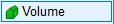
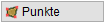
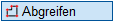
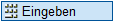
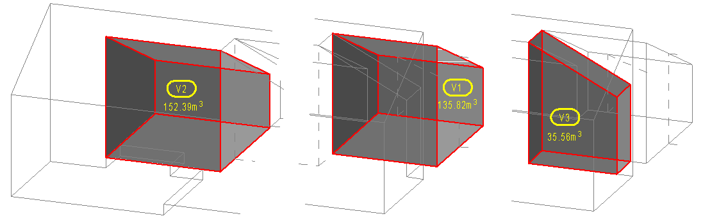

")

Volumendefinition und -berechnung prismatischer Körper. Grundfläche und Deckfläche müssen parallel verlaufen! Die Vorgehensweise ist abhängig von der im Funktionsbereich gewählten Art der Flächendefinition.
 |
Auswahl der Flächenbegrenzung über die Eckpunkte (Standardeinstellung). |
|
Auswahl der Flächenbegrenzung über Linien- oder Kreiselemente. |

Einzelvolumen können für beliebige Grundflächen und Höhen ermittelt werden. Jedem Einzelvolumen wird ein Vorzeichen (+/-) hinzugefügt, das angibt, ob das Einzelvolumen zum Gesamtvolumen addiert oder von diesem subtrahiert werden soll.
1.Volumen definieren
Für die Volumendefinition stehen folgende Optionen zur Verfügung:

 Auswahl des Volumens durch Anklicken der Eckpunkte oder Elemente. §Klicken Sie die Eckpunkte bzw. die Begrenzungselemente der Grundfläche an. [1. Eckpunkt] oder [Klicken Sie Elemente an]. §Geben Sie unter Länge/Höhe die Höhe ein und bestätigen Sie mit der Eingabetaste.
§Wählen Sie unter Vorzeichen, ob das definierte Einzelvolumen dem Gesamtvolumen hinzugefügt (+ addieren) oder von diesem abgezogen (- abziehen) werden soll. Sie können jetzt die Volumenangaben in der Zeichnung absetzen. [Nummerierung]. |

 Angabe des Volumens durch Eingabe der Grundfläche (Länge*Breite) und Höhe. Beachten Sie die Eingabeeinheiten (s. unter Menüleiste → Eingabe). §Geben Sie unter Fläche eingeben die Grundfläche (Länge*Breite) ein und bestätigen Sie mit der Eingabetaste. (z. B. 3.5*6.3) §Geben Sie unter Länge/Höhe die Höhe ein und bestätigen Sie mit der Eingabetaste.
§Wählen Sie unter Vorzeichen, ob das definierte Einzelvolumen dem Gesamtvolumen hinzugefügt (+ addieren) oder von diesem abgezogen (- abziehen) werden soll. Sie können jetzt die Volumenangaben in der Zeichnung absetzen. [Nummerierung]. |
|
Angabe des Volumens durch Übernahme vorhandener Hüllflächen-Werte. §Klicken Sie die Flächennummer innerhalb der Positionsumrandung an. [Welcher Flächentext]. Falls von der gewählten Fläche andere Flächen (Fenster, Türen) abgezogen wurden, wird für die Volumenberechnung die Bruttofläche, also ohne Abzüge, benutzt. §Geben Sie unter Länge/Höhe die Hohe ein und bestätigen Sie mit der Eingabetaste.
§Wählen Sie unter Vorzeichen, ob das definierte Einzelvolumen dem Gesamtvolumen hinzugefügt (+ addieren) oder von diesem abgezogen (- abziehen) werden soll. Sie können jetzt die Volumenangaben in der Zeichnung absetzen [Nummerierung]. |
Einzelvolumen mit (laufender) Nummer bezeichnen und die Volumenangaben in der Zeichnung absetzen.
§Geben Sie unter Nummerierung die gewünschte Volumenbezeichnung ein und bestätigen Sie mit der Eingabetaste.
§Wählen Sie unter Lage, wie die Volumenbezeichnung (Nummer) und die Volumenangabe dargestellt werden sollen und setzen Sie die Volumenangaben per Mausklick in der Zeichnung ab.
Die Volumenangabe wird in der Zeichnung angezeigt. Sie können sofort ein weiteres Volumen definieren.
